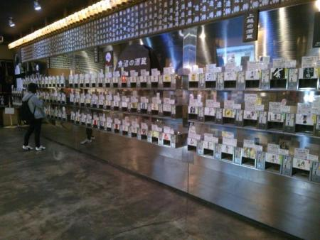
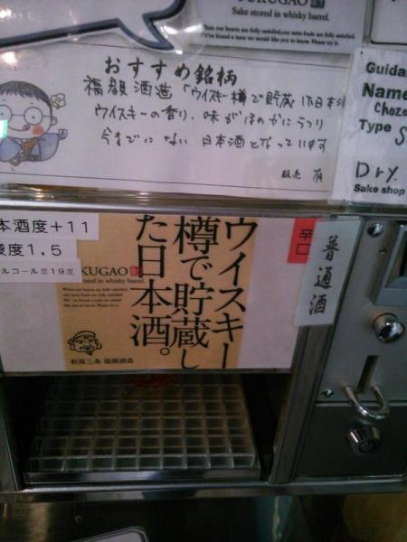
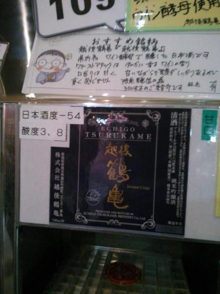

日記 - 2014-11
2014-11-02
ぽんしゅ館
@tokoharu_sakuraさんと@shioshiotaさんに誘われて、ぽんしゅ館に一泊二日で行ってきました。ぽんしゅ館は新潟の地酒をどれでも1杯100円で利き酒できる所です。銘柄は120種類くらいありました。

2日の旅程だったので2回行ったんですが、1日目はおいしいことが分かってる有名な酒を試しても面白くないだろーとか言って知らないのを飲んでいて、当たりと外れが半々といった感じでした（飲んでた時は銘柄くらい覚えられるだろうと思っていたけど、今思い出そうとしたら無理だった）。最初に適当に選んだら越後鶴亀の山廃仕込みで、これは流石に一番おいしかったです。
その後、宿でへぎそばとしゃぶしゃぶを食べながら、久保田百寿を飲みました。すっきりしていてよい。久保田萬寿も置いていたけど、流石に頼める値段ではなかった……。@shioshiotaさんがへぎそばをすごい勢いで食べていて面白かった。
ぽんしゅ館2日目はおいしそうな酒を適当に狙うことにして、気になったものを試飲したらおいしいのを引きまくりました。

ウイスキー樽で貯蔵した日本酒。ウイスキーはピート香がだめであまり飲まないんですが、これはあくまでも日本酒なので、樽の香りと日本酒の深い味わいが合わさっていいとこ取りをした酒になっています。

ワイン酵母で醸した越後鶴亀。日本酒度がバグったような数値です。口に入れた瞬間、ワインのような香りと甘さが広がりますが、少し経つと日本酒の複雑なうまみが出てきてとても面白いです。日本酒度の割にはすごく甘いというわけでもなく、甘めの白ワインくらいです（普通の日本酒と違う成分ができているせいで比重が重いんだろうか）。
この2銘柄はすごくおいしかったので、目の前の酒販所で買ってしまいました。4合でそれぞれ2000円と1600円なので結構高めですが、それだけの味はします。
ぽんしゅ館は越後湯沢と新潟にしかないですが、このためだけにでも一度は行ってみる価値があります。むしろ通いたい。